3 Laplace Transform
3.1 F.T. Limitation
Q1. What is the F.T. of \(u(t) \cdot e^{-t}\)?
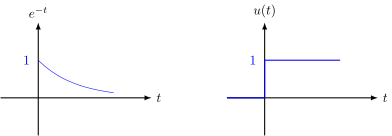
\[\begin{align*} \mathcal{F}[u(t) \cdot e^{-t}] &= \int_{-\infty}^{+\infty} u(t) \cdot e^{-t} \cdot e^{-i\omega t} \,dt \\ &= \int_{0}^{+\infty} e^{-(1 + i\omega) t} \,dt \\ &= \left. -\frac{1}{1 + i\omega} e^{-(1 + i\omega) t} \right\rvert_{0}^{+\infty} \\ &= 0 + \frac{1}{1 + i\omega} \cdot \color{red} \frac{1-i\omega}{1-i\omega} \\ &= \frac{1 - i\omega}{1 + \omega^2} \\ &= \frac{1}{1 + \omega^2} + \frac{-i\omega}{1 + \omega^2} . \end{align*}\]
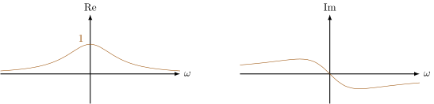
Q2. What is the F.T. of \(u(t)\)?
\[\begin{align*} \mathcal{F}[u(t)] &= \int_{-\infty}^{+\infty} u(t) \cdot e^{-i\omega t} \,dt \\ &= \int_{0}^{+\infty} e^{-i\omega t} \,dt \\ &= \left. -\frac{1}{i\omega} e^{-i\omega t} \right\rvert_{0}^{+\infty} \\ &= -\frac{1}{i\omega} \big(\color{red}\underset{\text{value}}{\underset{\text{undetermined}}{\underline{\color{black}e^{-i\omega\infty}}}} \color{black} - 1\big) \end{align*}\]
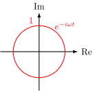
Q3. What is the F.T. of \(e^t \cdot u(t)\)?
\[\begin{align*} \mathcal{F}[e^t \cdot u(t)] &= \int_{-\infty}^{+\infty} e^t \cdot u(t) \cdot e^{-i\omega t} \,dt \\ &= \int_{0}^{+\infty} e^{(1 - i\omega) t} \,dt \\ &= \left. \frac{1}{1 - i\omega} e^{(1 - i\omega) t} \right\rvert_{0}^{+\infty} \\ &= \frac{1}{1 - i\omega} \cdot (\infty - 1) \end{align*}\]
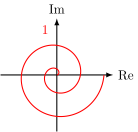
3.2 Laplace Transform
The premise of F.T. is that \(f(t)\) must be convergent.
What if \(f(t)\) is not convergent?
\[\begin{align*} & \int_{-\infty}^{+\infty} u(t) \cdot \color{red}\underbrace{\color{blue} e^{-\sigma t} \color{black} \cdot e^{-i\omega t}} \color{black} \,dt \\ =& \int_{\color{red}{0}}^{+\infty} u(t) \cdot \color{red}{e^{-(\sigma + i\omega) t}} \color{black} \,dt \end{align*}\]
Define \(s = \sigma + i\omega\)
\[\mathcal{L}[f(t)] = \int_{0}^{+\infty} f(t) \cdot e^{-st} \,dt .\]
\[\begin{array}{ll} \text{L.T.: } & f(t) \div e^{\sigma t} \text{ to find } e^{\sigma t} \text{ in } f(t) \\ & f(t) \div e^{i\omega t} \text{ to find AC components at } \omega. \end{array}\]\[\begin{align*} \mathcal{L}[u(t)] &= \int_{0}^{+\infty} \color{red}\cancel{\color{black}u(t)} \color{black} \cdot e^{-st} \,dt \\ &= -\frac{1}{s} \cdot e^{-st} \bigg\rvert_{0}^{+\infty} \\ &= 0 + \frac{1}{s} \end{align*}\]
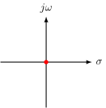
\(s=1\): \(\displaystyle \int_{0}^{+\infty} e^{-t} \,dt = 1\).
\(s=2\): \(\displaystyle \int_{0}^{+\infty} e^{-2t} \,dt = \frac{1}{2}\).
\(s=3\): \(\displaystyle \int_{0}^{+\infty} e^{-3t} \,dt = \frac{1}{3}\).
\(s=0\): \(\displaystyle \frac{1}{0} = \infty\).
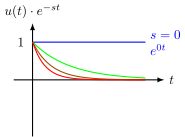
\[\begin{align*} \mathcal{L}[e^t] &= \int_{0}^{+\infty} \cancel{u(t)} \cdot e^t \cdot e^{-st} \,dt \\ &= \int_{0}^{+\infty} e^{(1-s)t} \,dt \\ &= \left. \frac{1}{1-s} e^{(1-s)t} \right\rvert_{0}^{+\infty} \\ &= 0 - \frac{1}{1-s} \\ &= \frac{1}{s-1} \end{align*}\]
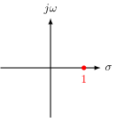
When \(s=1\), \(\mathcal{L}[e^t] = \displaystyle\frac{1}{0} = \infty\), meaning that the original function contains \(\underline{\underline{e^t}}\).
3.3 Why do we need to find exponentials?
- LTI system is differential equations (D.E.)
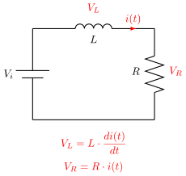
KVL:
\[\underset{\text{D.E.}}{\underbrace{V_i = L \cdot \frac{di(t)}{dt} + R \cdot i(t)}}\]
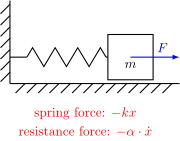
NSL:
\[\underset{\text{D.E.}}{\underbrace{F - kx - \alpha \cdot \dot{x} = m \cdot \ddot{x}}}\]
- Solutions to D.E. must be either \[\begin{cases} \text{Exponential: } & e^{at} \\ \text{Sinusoid: } & \sin(\omega t) \end{cases}\]
3.4 L.T. Examples
-
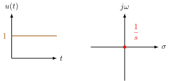
-
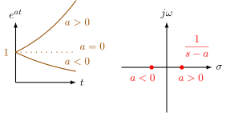
-
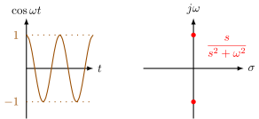
\[\begin{align*} \mathcal{L}[\cos(\omega t)] &= \int_{0}^{+\infty} \cos(\omega t) \cdot e^{-st} \,dt \\ &= \frac{1}{2} \int_{0}^{+\infty} \left(e^{i\omega t} + e^{-i\omega t}\right) \cdot e^{-st} \,dt \\ &= \frac{1}{2} \int_{0}^{+\infty} \left[e^{-(s - i\omega) t} + e^{-(s + i\omega) t}\right] \,dt \\ &= \frac{1}{2} \left.\left[ -\frac{1}{s - i\omega} \cdot e^{-(s - i\omega) t} - \frac{1}{s + i\omega} \cdot e^{-(s + i\omega) t} \right] \right\rvert_{0}^{+\infty} \\ &= \frac{1}{2} \left[ \frac{1}{s - i\omega} + \frac{1}{s + i\omega} \right] \\ &= \frac{s}{s^2 + \omega^2} \end{align*}\]
-
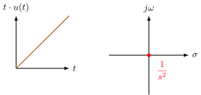
\[\begin{align*} \mathcal{L}[t \cdot u(t)] &= \int_{0}^{+\infty} t \cdot e^{-st} \,dt \\ &= \int_{0}^{+\infty} -\frac{1}{s} \cdot t \,de^{-st} \qquad \color{YellowOrange}\frac{d e^{-st}}{dt} = -s \cdot e^{-st}\\ &= -\frac{1}{s} \int_{0}^{\infty} t \cdot \,de^{-st} \\ &= -\frac{1}{s} \left[ t \cdot e^{-st} \bigg\rvert_{0}^{\infty} - \int_{0}^{\infty} e^{-st} \,dt \right] \\ &= -\frac{1}{s} \left[ \cancel{0 - 0} - \left(-\frac{1}{s}\right)\cdot e^{-st} \bigg\rvert_{0}^{\infty} \right] \\ &= -\frac{1}{s} \cdot \frac{1}{s} \cdot (0-1) \\ &= \frac{1}{s^2} \end{align*}\]
Side notes: \[\begin{align*} \color{green}(xy)' \,&\color{green}= x'y + xy' \\ \color{green}xy \,&\color{green}= \int x\,dy + \int y\,dx \\ \color{green}\int x\,dy \,&\color{green}= xy - \int y\,dx \end{align*}\]
L.T. Examples (cont’d) - 05/15
-
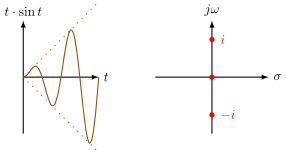
\[\begin{align*} \mathcal{L}[t \cdot \sin(\omega t)] &= \mathcal{L}\{\frac{1}{2i} \cdot t \cdot e^{it} - \frac{1}{2i} \cdot t \cdot e^{-it}\} \\ &= \frac{1}{2i} \cdot \mathcal{L}\{t \cdot e^{it}\} - \frac{1}{2i} \cdot \mathcal{L}\{t \cdot e^{-it}\} \\ &= \frac{1}{2i} \cdot \frac{1}{(s - i)^2} - \frac{1}{2i} \cdot \frac{1}{(s + i)^2} \\ &= \frac{1}{2i} \cdot \frac{4i \cdot s}{(s-i)^2 (s+i)^2} \\ &= \frac{2s}{(s^2 + 1)^2} \end{align*}\]
\[\begin{align*} &\color{YellowOrange} \sin t= \frac{e^{it} - e^{-it}}{2i} \\ &\color{red} \mathcal{L}\{t\} = \frac{1}{s^2} \\ &\color{red} \mathcal{L}\{t \cdot e^{at}\} = \frac{1}{(s-a)^2} \\ &\color{red} (s+i)(s-i) = s^2 + 1 \end{align*}\]